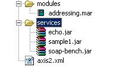

Frequently Asked Questions on Apache Axis2
General
Class Loading Issues
Client API
- I want to do Request-Response Messaging, Where should I look?
- I want to do One Way Messaging, Where should I look?
- When I try to do a non blocking call with useSeparateListener=true I get the error to do two Transport Channels the Addressing Modules must be engaged, Why is this?
- I have engaged addressing, and when I try to invoke a service I get an exception
- What is Axis2 Repository?
Services
- How do I have multiple services in one service archive?
- I see an internal server error page when I try to view the WSDL file.
Databindings
General
- I'm having a problem using Axis2. What should I do?
-
First make sure you go through the user guide and this FAQ. If you are using a released version of Axis2, then there is a possibility that your problem has already being fixed in the latest code. Download Axis2 nightly builds and test again. You can download the complete snapshot distributions from our Hudson continuous integration server and individual JARs from our snapshot repository. The snapshot repository is also the best choice if you are using Maven to build your project.
If the problem still persists, then try to search for your question in our developer or user mailing archives as it might have already being answered.
If your problem is not answered in the mailing list, now is the best time to post your question to the axis-user mailing list (see next question). If you think it is a bug, please fill a bug report in JIRA. Please attach all the supportive information, like your wsdl, schema, clients, services, stacktraces, etc., to the JIRA issue you created, as it will help one of our contributors to re-create the problem. PLEASE DO NOT ASK QUESTIONS USING JIRA; USE IT ONLY AS AN ISSUE TRACKER.
If you are asking for an explanation of a feature in Axis2, there is a possibility that there is an article or FAQ written on it. Please search the web as there are lots of articles written and hosted by various sources on the web.
- How to ask a question on the mailing list?
-
If you have a question that has not been answered elsewhere (see previous question), you may ask it on one of the mailing lists:
- Users : java-user@axis.apache.org
- Developers : java-dev@axis.apache.org
Before posting to a list, you need to subscribe first. Since the mailing lists are shared with other subprojects (such as Rampart), please prefix the subject with [Axis2].
Note : When you ask questions in the mailing list, please remember that everyone working in our project are volunteers. No-one can be forced to fix your bugs (See What is Apache not about? ).
Make sure you add enough information about your problem with stacktraces and any other supportive information. It will improve the chances of your question being answered. Prefixing your mail subject with prefixes like "URGENT" will not help you in any means. Yes we also accept all the blames about Axis2 in these mailing lists, as those will definitely help us to improve Axis2 :) .
Class Loading Issues
- How do I access resources that I put into my service or module archive file?
-
Axis2 has the notion of service isolation where each service or module gets its own class loader. Using this class loader you can access any resource that you put into your service archive file. You may want to access your resources from different locations. For example,
-
A third party module wants to access your resources. Then the scenario is as follows:
AxisService myService = messageContext.getAxisConfiguration().getAxisService("serviceName");or
AxisService myService = msgCtx.getAxisService();
Then you can use the service class loader through which you can access its resources
ClassLoader clsLoader = myService.getServiceClassLoader(); clsLoader.getResourceAsStream("myResource"); -
To initialize the service implementation class at the MessageReceiver level, the following steps need to be taken
AxisService service = msgCtx.getAxisService(); ClassLoader clsLoader = service.getServiceClassLoader(); Class.forName("serviceName",clsLoader,true);NOTE : Axis2 default MessageReciver uses the same technique to initialize service implementations
-
If you want to load your resources at the service implementation class, then the scenario is as follows
getClass().getClassLoader().getResourceAsStream("myResource");
-
Client API
- I want to do Request-Response Messaging, Where should I look?
-
Look at the ServiceClient class, for more information please read the User's Guide
- I want to do One Way Messaging, Where should I look?
-
From Axis2 0.94 onwards, both request-response and one way messaging will be handled by ServiceClient.
- When I try to do a non blocking call with useSeparateListener=true I get the error to do two Transport Channels the Addressing Modules must be engaged, Why is this?
-
To do the two transport channel invocation, you need to engage the addressing module. You can enable it by un-commenting the entry in the axis2.xml file or
Call.engageModule(QName). However, addressing is enabled by default. - I have engaged addressing, and when I try to invoke a service I get an exception
-
If you have engaged addressing, then you must have wsa:action, the required WS-Addressing header. You have to call
option.setAction("urn:myaction");. Note that the action should be a URI. - What is Axis2 Repository?
-
The Repository stores the configuration of Axis2. The users should specify the repository folder of the Axis Server (HTTP or TCP). In the case of Tomcat, it is the webapps/axis2/WEB-INF folder. The following picture shows a sample repository.
Modules and services have an archive format defined and they are automatically picked up by Axis2 when they are copied to corresponding folders.
Services
- How do I have multiple services in one service archive?
-
It's just a matter of writing a services.xml file to configure the service or services in an archive file. The corresponding services.xml must look as follows,
<serviceGroup> <service name="myService1"> ........................... </service> <service name="myService2"> ........................... </service> <serviceGroup>
NOTE : The name attribute is a compulsory attribute that will become the name of the services. If you want to have one service in the archive file, then there are two options. You can either have one service inside the serviceGroup tag or have only one service tag, as shown below, in your services.xml, in which case, the name of the service will be the name of the archive file, which you cannot override.
<service> ............... <service>
- I see an internal server error page when I try to view the WSDL file.
-
This happens specifically with Tomcat 4.x and 5.0 in a JDK 1.5 environment. The reason is that the system picks up a wrong transformer factory class. This can be solved simply by putting the xalan-2.7.0.jar into the axis2/WEB-INF/lib directory
Databindings
- When using ADB, I get an "Unexpected subelement" exception. Is this a bug?
-
In general, "Unexpected subelement" means that the message being processed doesn't conform to the WSDL that was used to generate the ADB code. If you are getting this exception on the client side, it means that the response from the server is invalid. If you are seeing the error on the server side, it means that the request received by the service is invalid.
If you are sure that the message conforms to the WSDL and believe that there is an issue with the code generated by Axis2, you should do the following before opening a JIRA issue:
- Test the scenario with the latest Axis2 snapshot version. This includes regenerating the code with the latest codegen version.
- Provide the WSDL that causes the issue, or if for legal reasons you are not allowed to provide the original WSDL, provide a minimal WSDL that reproduces the problem.
- Provide some hard evidence that this is indeed an issue in Axis2. This means at least a transcript of the SOAP message that proves that it conforms to the WSDL.